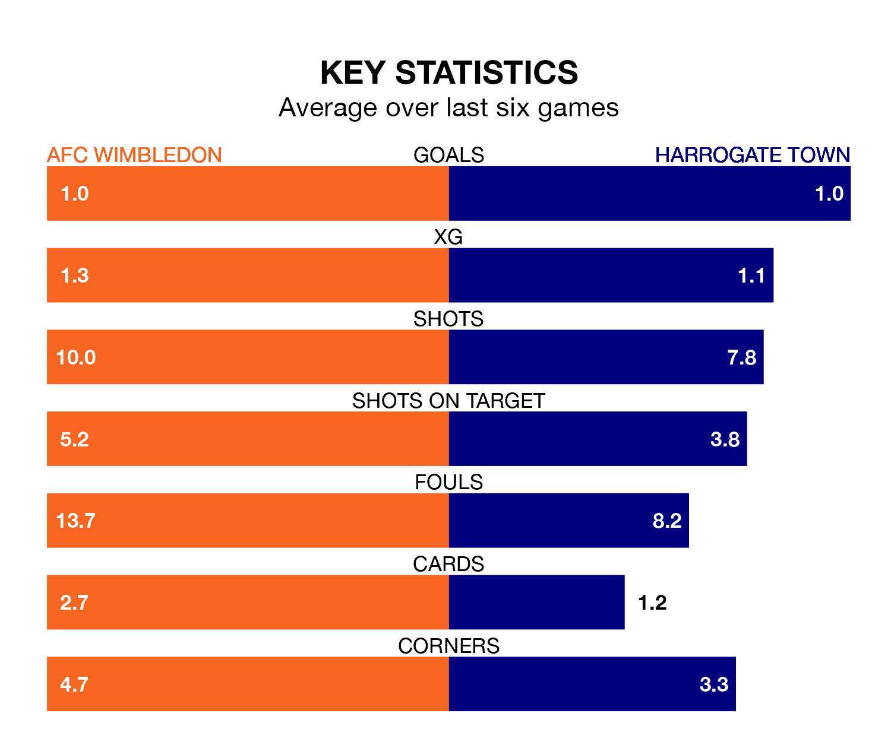

AFC Wimbledon are heavy favourites to keep all three points at home in Friday's kick-off against Harrogate Town.
The Dons, who sit ninth in EFL League Two with 40 games played, are priced at 1.6 to seal victory at the Cherry Red Records Stadium.
Sitting three places and four points behind them in the table, Harrogate are 5.2 to win with *Betting Company*, while the draw is at 4.2.
In Alex Bass, Wimbledon can rely on one of the league's safest pair of hands. He has kept 15 clean sheets in his 40 appearances this season, and no 'keeper has prevented the opposition scoring more often in EFL League Two.
In Harrogate's net, Mark Oxley has three clean sheets in 16 games. He has conceded a goal every 74 minutes, 20% more often than the 90 minutes between goals for Bass.
With 46 goals in 39 games so far this season, Town are scoring at below the league average rate with 1.2 goals per game. But they are conceding fewer than average too, letting in 55 goals at a rate of 1.4 per game.
The Dons are also below average scorers, with 1.3 goals per game, compared to a league average of 1.5. They have conceded 1.0 goal per game.
The home team are in reasonable form in EFL League Two, with three wins and two draws from their last six games.
With a win and three draws over that period, the visitors' form is worse – they have taken six points from 18, compared to Wimbledon's 11.
In the last three years, Wimbledon and Harrogate have played each other on three occasions. Wimbledon won two of them and they drew once.
Their last meeting was on October 3, when Wimbledon won 1-0 away.
Wimbledon's last match was on Saturday, a 1-1 draw against Crewe Alexandra, with John-Kymani Gordon getting the goal for the Dons.
Harrogate beat Bradford City 3-0 last time out, also on Saturday, with Daniel Oyegoke (own goal), George Thomson and Josh March on the scoresheet.
Updated: 12:16 (UTC), 25/03/24